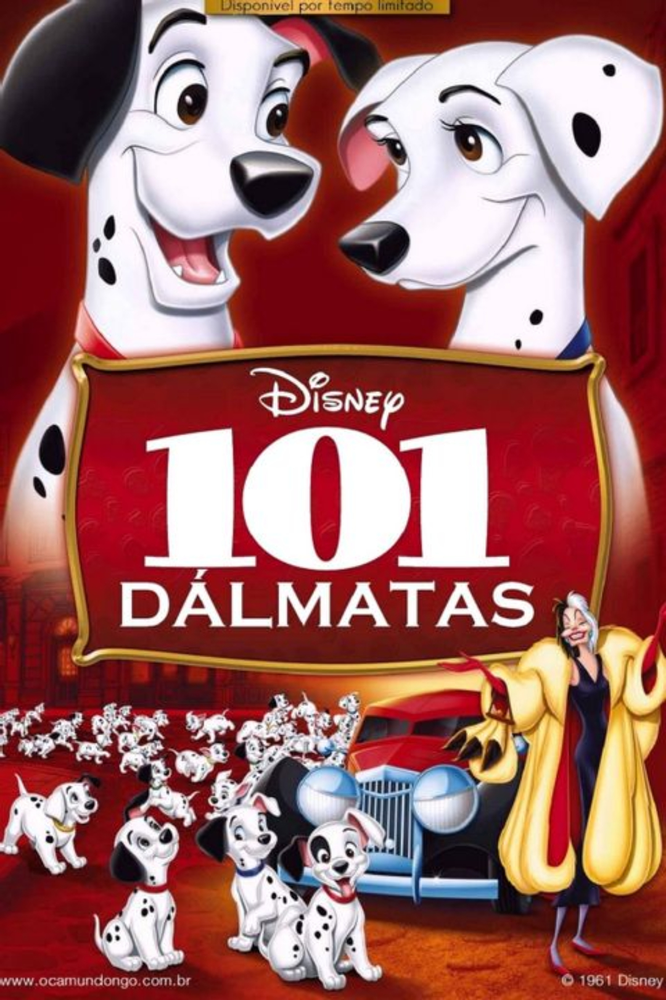

Anita e Roger possuem um casal de dálmatas chamado Pongo e Prenda.
Quando a fêmea acaba de dar a luz a 15 filhotes, Cruela Cruel,
uma antiga amiga de Anita, rica e viciada em roupas de pele
de animais, se propõe a comprá-los. Roger nega vender os filhotes,
pois desconfia que ela queira transformar os cachorrinhos
em casacos de pele. Indignada, Cruela vai contar com seus capangas
para roubar os tão almejados filhotes.
79 minutos
Livre
Animação, aventura, comédia
1961